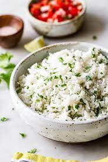

Cilantro Lime Recipe
Cilantro Lime Rice Recipe

DESCRIPTION
Get this recipe for simple, delicious, homemade cilantro lime rice! If you love Mexican-inspired meals, this rice will be your constant friend.
For ingredients, you'll need:
- 2 tablespoons chopped cilantro
- Juice and zest of 1 large lime
- 1 1/4 cup white rice
- 3/4 teaspoon salt
- 1 bay leaf
INSTRUCTIONS
- Firstly, water in a large pot over medium-high heat. Once it’s boiilng, add Bay leaf, followed by rinsed rice. Stir for 30 secs (till aromatic). Simmer for 20-25 minutes, until all liquid has been absorbed and the rice is tender.
- Remove bay leaf from pot. Then, take your chopped cilantro, lime Juice, and salt and add to rice.
- Mix together and serve with your favorite meal or eat as is!